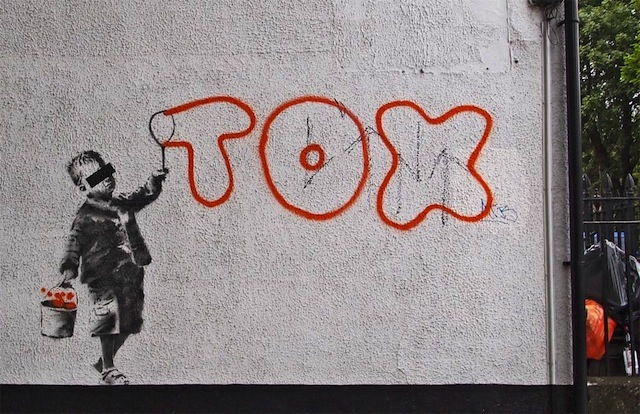

Credit
In June 2011, graffiti lover Daniel Halpin, aka Tox was convicted of tagging multiple locations over a three year period. The prosecution mocked him as ‘no Banksy’ due to a lack of artistry in his tagging.
In response Banksy put up the piece which shows a little boy writing ‘Tox’ in bubbles. People are not sure whether this is a show of solidarity or being used to poke fun at Halpin.
2011-06
Spray Paint
London, UK